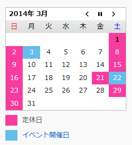

中口研ゼミについて
専門ゼミでは、学生が自分の研究分野における最新の英語論文を読み、日本語で発表します。聴講者は１質問がDutyです。
画像処理ゼミでは画像処理の基本を輪講形式で学びます。修士1年生が進行を務め、学部4年生が発表します。
参加者全員がすべて理解できるまでディスカッションしながら進めますので１人の発表は１～2時間となります。
中口研の各ゼミは公開型ですので、どなたでも参加できます。 参加ご希望の方はお問い合わせよりご連絡ください。
＝＝ 開催予定カレンダー ＝＝
過去の開催記録はこちら
[開催中] 2019年度 前期 専門ゼミ
開催場所：フロンティア医工学センター(CFME) A棟 204 中口研究室実験室
- １．2019/05/09 (木) 15:30開始
M1 関口
Tamer Elfaramawy, Cheikh Latyr Fall , Soodeh Arab, Martin Morissette,François Lellouche, and Benoit Gosselin: A Wireless Respiratory Monitoring System Using a Wearable Patch Sensor Network , IEEE Sensor Journal(Volume:19, Issue:2, Jan.15 2019, pp650-657) - ２．2019/05/16 (木) 12:00開始
M1 瀧上
- ３．2019/06/13 (木) 13:00開始
M1 木村
Eli Gibson , Francesco Giganti , Yipeng Hu , Ester Bonmati , Steve Bandula , Kurinchi Gurusamy ,Brian Davidson , Stephen P. Pereira , Matthew J. Clarkson , and Dean C. Barratt: Automatic Multi-organ Segmentation on Abdominal CT with Dense V-networks , IEEE Trans Med Imaging. 2018 Aug; 37(8): 1822–1834. - ４．2019/06/20 (木) 13:00開始
M1 徳嶺
- ５．2019/07/04 (木) 13:00開始
M2 唐
Liu, W., Anguelov, D., Erhan, D., Szegedy, C., Reed, S., Fu, C. Y., & Berg, A. C.: Ssd: Single shot multibox detector , European conference on computer vision. Springer, Cham, 2016. p. 21-37. - ６．2019/07/11 (木) 13:00開始
M2 大野
Azumi Araki, Kazuhide Makiyama, Hiroyuki Yamanaka, Daiki Ueno, Kimito Osaka, Manabu Nagasaka, Takahiro Yamada, Masahiro Yao: Comparison of the performance of experienced and novice surgeons: measurement of gripping force during laparoscopic surgery performed on pigs using forceps with pressure sensors , Surgical Endoscopy : (2017) 31, Impact factor : 3.117 - ７．2019/07/18 (木) 9:30開始
M2 篠崎
Katsuyuki Sakuma, AvnerAbrami, Gaddi Blumrosen, Stanislav Lukashov, Rajeev Narayanan, JosephW. Ligman, Vittorio Caggiano & Stephen J. Heisig: Wearable Nail Deformation Sensing for Behavioral and Biomechanical Monitoring and Human-Computer Interaction , Nature Scientific Reports 8, Article number: 18031 (2018) (IF : 4.609) Published online : 21 December 2018